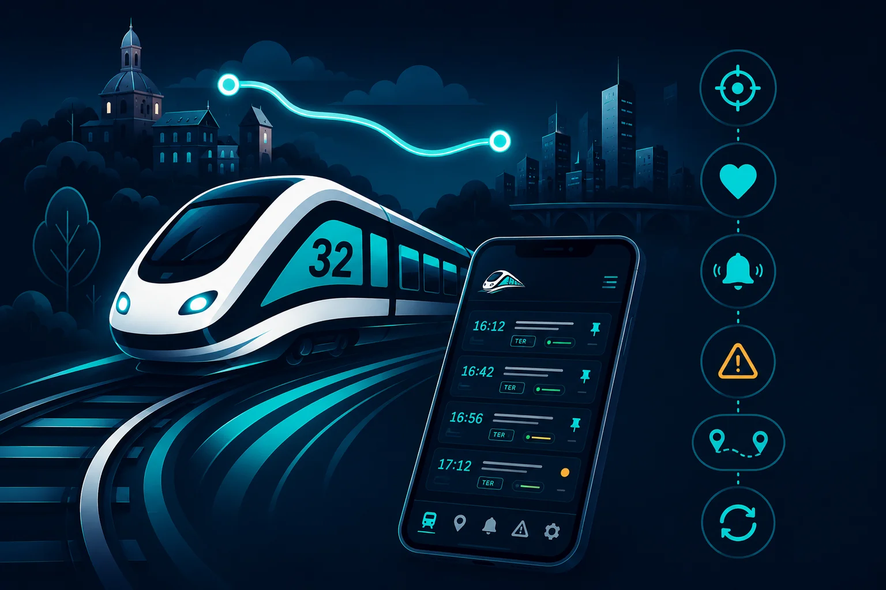
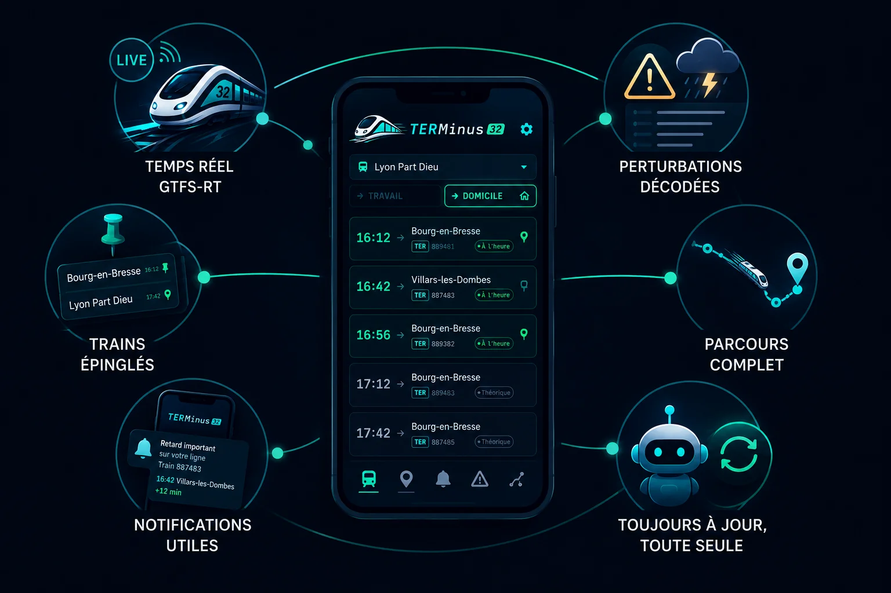

TERMinus
L'heure de votre train, en temps réel.
Ligne 32 · Bourg-en-Bresse ⇄ Lyon · Android
Open data · ODbL
100 % sur l'appareil
Sans compte · sans pub

L'heure de votre train, en temps réel.
Ligne 32 · Bourg-en-Bresse ⇄ Lyon · Android

TERMinus ne cherche pas à couvrir toute la France : elle connaît votre ligne par cœur. Les 13 gares de la ligne 32 sont embarquées, l'app démarre directement sur votre trajet Domicile ⇄ Travail, et chaque écran répond à la question du quotidien : « mon train est-il à l'heure ? »
Bourg-en-Bresse · Servas-Lent · Saint-Paul-de-Varax · Marlieux-Châtillon · Villars-les-Dombes · Saint-Marcel-en-Dombes · Saint-André-de-Corcy · Mionnay · Les Échets · Sathonay-Rillieux · Lyon Part-Dieu · Lyon Vaise · Lyon Perrache
L'app interroge directement les flux temps réel publics de la SNCF (transport.data.gouv.fr) depuis votre téléphone. Aucun backend, aucune donnée personnelle ne quitte l'appareil, aucun compte à créer. Les données publiées (horaires, statistiques de ponctualité) sont ouvertes et vérifiables.
Et si l'expérience fait ses preuves, la même mécanique pourra un jour être déclinée à d'autres lignes — chaque ligne son app, légère et sur mesure.

Retards, suppressions et arrêts non desservis, rafraîchis automatiquement (30 s à 5 min, au choix). Heure d'arrivée estimée sur chaque départ.
Épinglez votre train du matin en récurrent : confirmation quand il apparaît dans le flux, alerte dès qu'il déraille du plan, rappel avant le départ si vous l'activez.
Seuil de retard réglable, gares surveillées, silence la nuit (22 h–6 h) avec exception pour les vraies urgences. Jamais deux fois la même alerte.
Grève, travaux, incident : cause, effet, période et trains touchés, avec badge directement sur les départs concernés.
Un tap sur un train ouvre son parcours gare par gare, avec les horaires estimés en temps réel et les arrêts supprimés barrés.
Les horaires théoriques se mettent à jour chaque semaine sans réinstallation, et l'app vous propose ses propres mises à jour dès qu'une version sort.